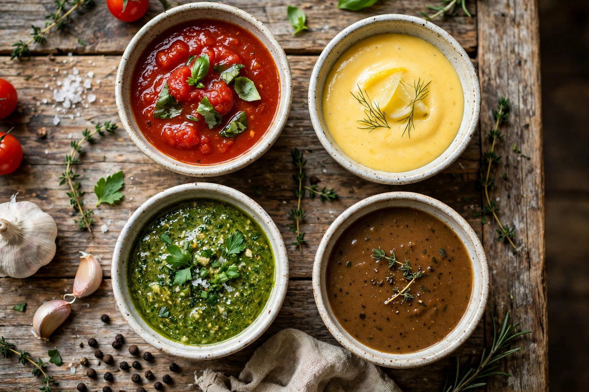

| Sauce | |
 | |
| Type | Condiment / accompaniment |
|---|---|
| Main ingredients | Varies; commonly liquid base, fat, seasonings |
| Variations | Mother sauces, pan sauces, dipping sauces, dessert sauces |
In cooking, a sauce is a liquid, cream, or semi-solid food served on or used in preparing other foods. Most sauces are not normally consumed by themselves; they add flavour, moisture, and visual appeal to a dish. The word comes from the French sauce, ultimately from the Latin salsus, "salted."
In French cuisine, sauces are organised around the "mother sauces" (sauces mères) from which derivative "small sauces" are made. Auguste Escoffier codified five mother sauces in the early 20th century:
Mayonnaise, an emulsion of egg yolk and oil, is sometimes counted among the basic sauces as well.
Nearly every cuisine has its characteristic sauces: soy sauce and hoisin in East Asian cooking; salsa and mole in Mexican cooking; curry sauces in South Asia; romesco in Catalonia; chimichurri in Argentina; and gravy in Britain and North America. Ketchup, mustard and hot sauces such as Tabasco are among the most common commercial table sauces.
Sauces are thickened by reduction, by starches such as flour roux or cornstarch, by emulsification, or by puréeing their ingredients. Pan sauces are made by deglazing the pan in which meat was cooked, and dessert sauces include custards, chocolate sauce and fruit coulis.